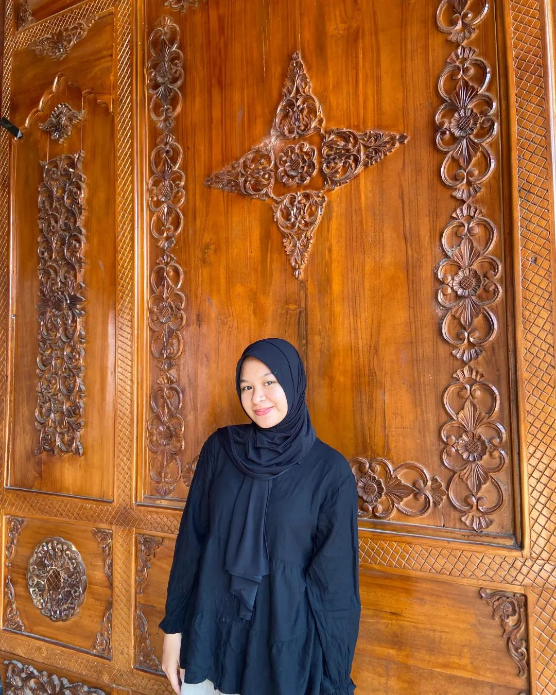
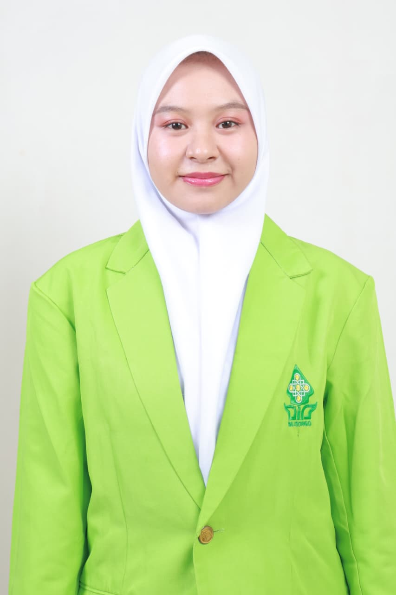
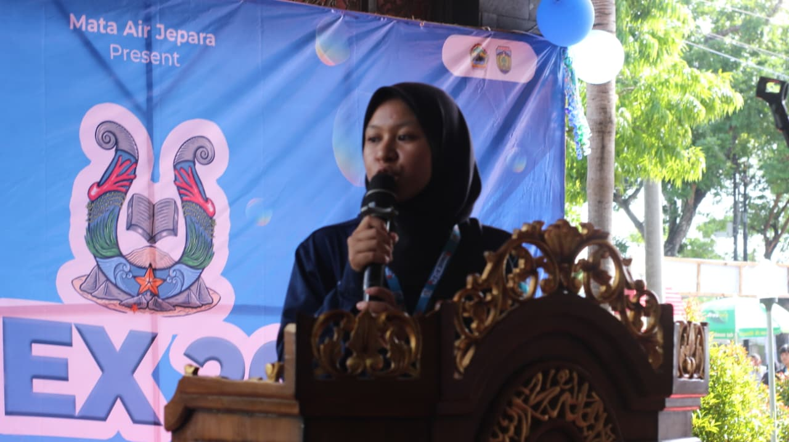
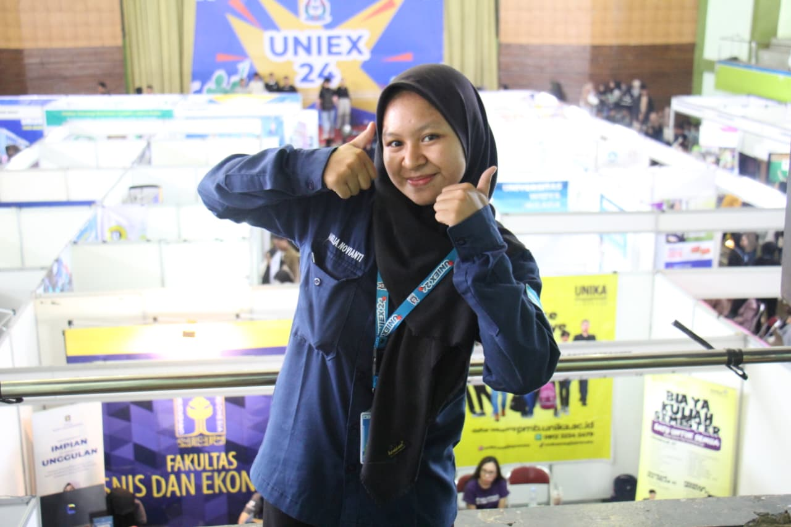

Menghubungkan Edukasi, Strategi Konten, & Manajemen Proyek.
Lulusan Pendidikan Agama Islam UIN Walisongo Semarang, dengan pengalaman memimpin tim, mengelola media, dan mengajar langsung.

“ Amelia Novianti, S.Pd.”

S.Pd Pendidikan Agama IslamMemimpin, menulis, dan mendidik .
Lulusan Pendidikan Agama Islam UIN Walisongo Semarang (2026), dengan rekam jejak memimpin proyek skala besar, mengelola redaksi media organisasi, hingga membangun kemitraan lintas sekolah. Terbiasa mengelola tim, menyusun strategi komunikasi, dan mendampingi siswa belajar secara langsung di kelas
Terbiasa memimpin tim & kelola proyek skala menengah - besar
Berpengalaman bangun kemitraan lintas instansi
Jejak & peran yang pernah dijalani
Beberapa tempat dan posisi yang pernah aku jalani sepanjang perjalanan ini.

Aug 2023 – Jan 2024Manajemen Proyek Skala Besar – University Expo Jepara
Project Leader / Project Manager Jepara, Jawa TengahMemimpin perencanaan, koordinasi tim, serta eksekusi operasional acara pameran pendidikan terbesar di Kabupaten Jepara untuk memfasilitasi siswa lulusan SMA menuju jenjang perguruan tinggi.
- 5.000+ Pengunjung: Mengelola arus massa dan operasional acara skala besar secara tertib dan lancar tanpa insiden keselamatan (zero-incident).
- 60+ Kemitraan Universitas: Menyusun proposal kemitraan strategis dan bernegosiasi hingga sukses mengakuisisi lebih dari 60 PTN/PTS sebagai partisipan utama.
- Akuisisi & Manajemen SDM: Menganalisis kebutuhan tim hari-H, menginisiasi program open recruitment relawan, dan memimpin eksekusi alur kerja tim relawan di lapangan.
 Jan 2023 – Nov 2024
Jan 2023 – Nov 2024
Editorial & Strategi Publikasi Media – HMJ PAI UIN Walisongo
Pimpinan Redaksi / Editor Utama / Content Writer Specialist Semarang, Jawa TengahMemegang kendali penuh atas arah publikasi media cetak dan digital organisasi, standardisasi kualitas tulisan, serta strategi komunikasi publik.
- Kepemimpinan Redaksi 3 Edisi: Dipercaya menjadi Pimpinan Redaksi Buletin Edisi 3, Penanggung Jawab Edisi 4, dan Editor Utama Edisi 5; mengawal proses kurasi hingga penerbitan.
- Pengembangan Traffic & Engagement: Mengelola operasional konten web (berita acara, artikel ilmiah, karya sastra) yang meningkatkan visibilitas dan interaksi audiens.

Aug 2022 – Jan 2023Hubungan Masyarakat & Outreach Strategis – University Expo
School Relation Officer / Humas Sekolah Jepara, Jawa TengahMembangun kemitraan dan jaringan komunikasi interaktif antara penyelenggara acara dengan jajaran sekolah menengah se-Kabupaten Jepara.
- School Mapping & Outreach: Mengidentifikasi dan mendata 50+ SMA/SMK/MA serta melakukan sosialisasi tatap muka ke 100+ sekolah.
- Stakeholder Relationship: Membangun komunikasi persuasif dengan Kepala Sekolah dan Guru BK untuk kerja sama program jangka panjang.
- Asistensi Logistik Transportasi: Memfasilitasi koordinasi mobilitas dan penjemputan bagi siswa dari daerah dengan akses transportasi terbatas.
 2024 – sekarang
2024 – sekarang
Edukasi, Pendampingan Perilaku & Evaluasi Akademik
Shadow Teacher (MI Miftahul Huda) & Guru PLP (SMPN 16 Semarang) Semarang, Jawa TengahMerancang instruksi pembelajaran adaptif, mengelola regulasi emosi peserta didik, dan menganalisis perkembangan belajar siswa secara berkala.
- Modifikasi Materi & Instruksional Adaptif: Menyesuaikan materi pelajaran dari guru kelas maupun kurikulum siswa privat agar lebih mudah dipahami sesuai kebutuhan dan kecepatan belajar masing-masing anak.
- Pendampingan Emosi & Perilaku: Membantu anak mengelola emosi, meredakan kecemasan, serta memberikan pendampingan saat menghadapi situasi tantrum di lingkungan sekolah.
- Fasilitasi Interaksi Sosial: Menjadi jembatan interaksi sosial antara anak dengan teman sebaya maupun guru untuk mendukung keterlibatan sosialnya di sekolah.
- Pencatatan & Koordinasi Perkembangan: Melakukan pencatatan perkembangan akademik dan perlilaku harian dari kedua peran (shadow teaching & private tutor), lalu mengkoordinasikannya dengan orang tua serta psikolog
Bidang Keahlian / Yang Bisa Aku Bantu
Manajemen Event
Memimpin perencanaan hingga eksekusi acara & program skala besar, dari koordinasi tim, kemitraan, sampai kontrol anggaran.
Strategi Konten
Mengelola arah publikasi media cetak & digital, dari kurasi tulisan sampai strategi yang mendongkrak visibilitas dan interaksi audiens.
Mengajar & Pendampingan
Merancang instruksi pembelajaran adaptif dan mendampingi perkembangan akademik siswa secara personal, termasuk kebutuhan belajar khusus.
Perjalanan Karir Saya
Mulai les privat Tutor di EduSmart Teacher, mendampingi siswa dari jenjang SD hingga SMA.
Shadow Teacher di MI Baitul Huda, mendampingi kebutuhan belajar siswa secara personal di lingkungan sekolah.
Kata orang tua & siswa
Nilai matematika anak saya naik signifikan dalam satu semester. Yang paling terasa, dia jadi nggak takut lagi sama pelajaran ini.
Bapak Handoko, orang tua siswa kelas 9Cara ngajarnya sabar dan gampang dipahami. Kak Amelia selalu cek dulu bagian mana yang bikin bingung sebelum lanjut.
Kirana, siswa kelas 11Jadwalnya fleksibel dan selalu ada laporan progres tiap bulan, jadi kami tahu perkembangan anak dengan jelas.
Ibu Sari, orang tua siswa kelas 6Yuk, jadwalkan sesi belajar
Ceritain kebutuhan belajar putra/putrimu, nanti aku bantu susunin jadwal & rencana belajarnya.